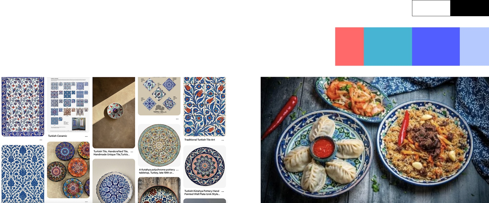
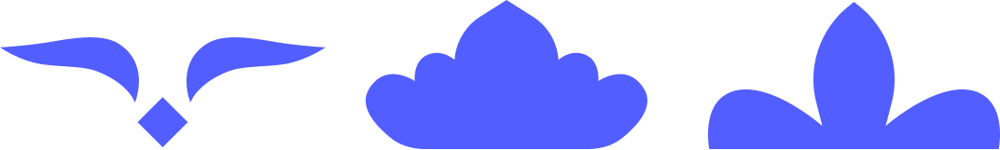
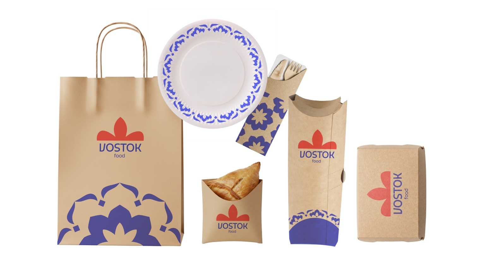
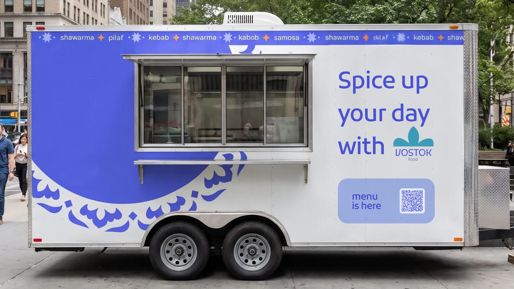

VOSTOK
08Цвета и стилеобразующие элементы берём из восточной керамики и блюд, которые в этой керамике чаще всего случаются.

Гарнитура. Современная и с восточным оттенком.

Лого

Стилеобразующие элементы, орнаменты


Носители



